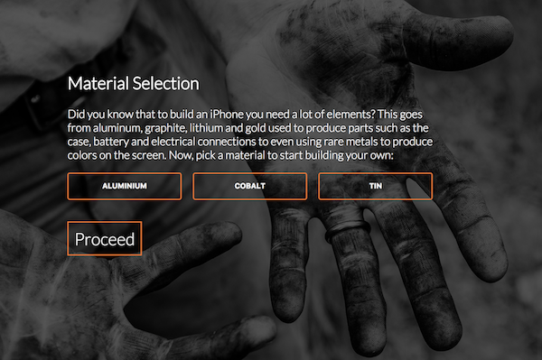

SustainUp
The winning project for Outotec's sustainability challenge in Junction hackathon 2017. The main objective was to find a way to improve consumers' knowledge about the impact of their choices. To tackle this problem we created a gamified learning experience for high school kids about the lifecycle of a mobile phone. The project was done in a group of five. I took part in the planning phase and did most of the development needed for the project. The application was built using Angular 4 framework. You can find the final product in this address.

Sierra website
A freelance website project for Sierra condominium. This was my first freelance project, which made it really interesting. I did the website entirely by myself including the design. The website was done with Angular JS, which was a new frameworking language for me. Even though the webpage is simple, I am pretty satisfied with the outcome. you can visit the site on www.sierra.fi

Tutee
As an university project we made an application called Tutee in a group of four. The main objective of the application is to pair up people who are interested in tutoring with people who are looking for tutors. The application provides filtering features that make it easier to find a suitable tutor for your needs, tutoring class reservation system, calendar features, and a chat for conversations. The application can be found in Google Play with the name Tutee.

MyMind
MyMind is a simple prototype application for reading news that I made for a company called Qvick. The prototype application focuses mainly on the visual side of the application and creating a smooth user experience for moving from the categories to reading the chosen article. As the application is only a prototype, the news only exist locally and it is not capable to fetch the news from a website or a database. The source code of the application can be found on my Github page.

Omnifood
A webpage for an imaginary food company made as an outcome of an Udemy web development course. The main focus of the project was to build a beautiful reactive website that would provide the customers a pleasant user experience. The source code of the website can be found on my Github page.

Highway dodging game
Highway racing game was my first bigger university project made in a group of three. With the group we designed a 2D game in which the player is driving on a highway, dodging other cars, and avoiding to drop off from the game field. The game provides visual user interface, basic moving commands, sounds, and music. The source code of the game can be found on my Github page.